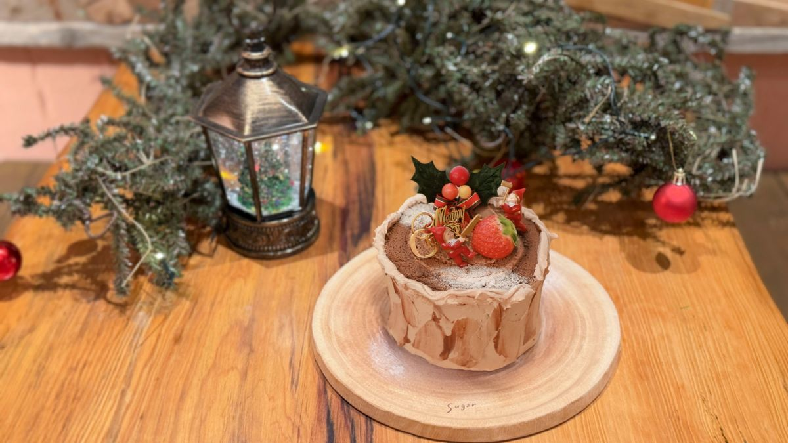
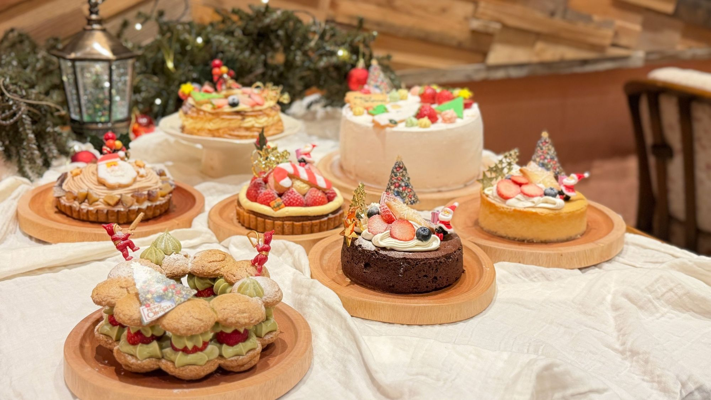
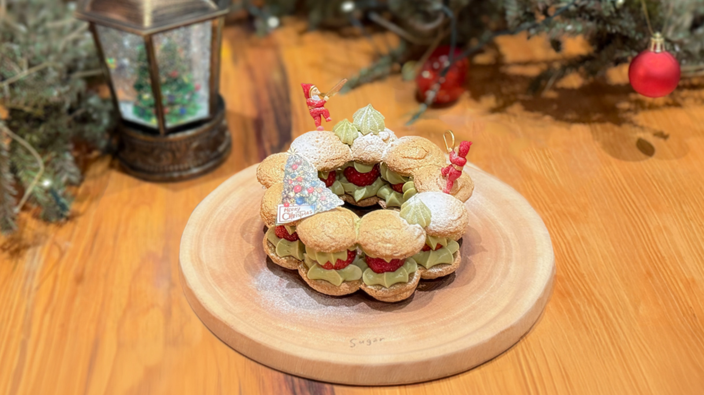
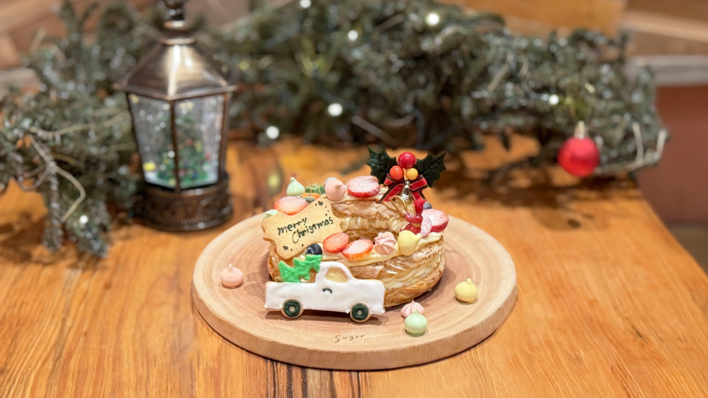
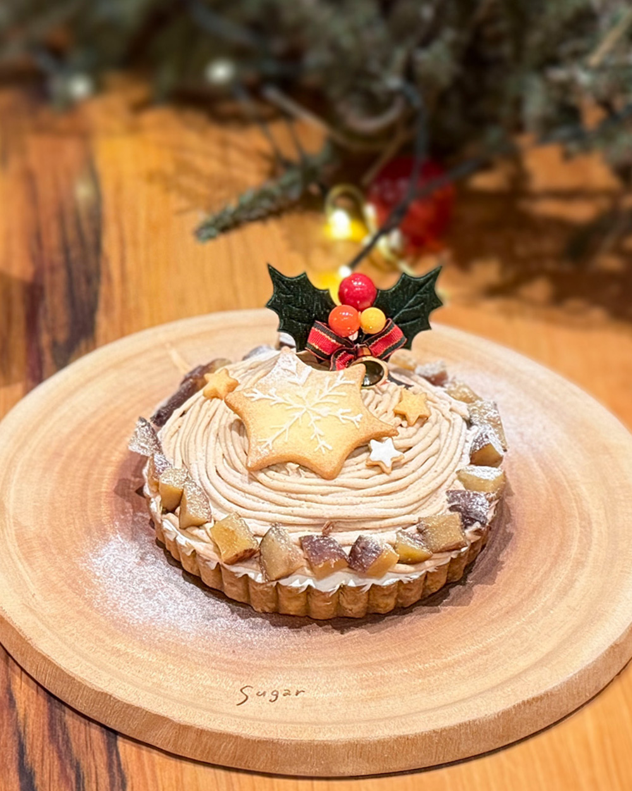
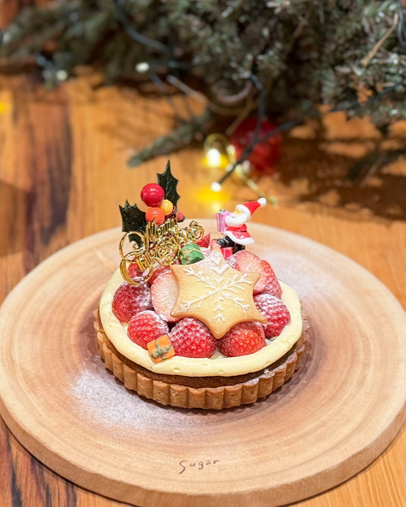
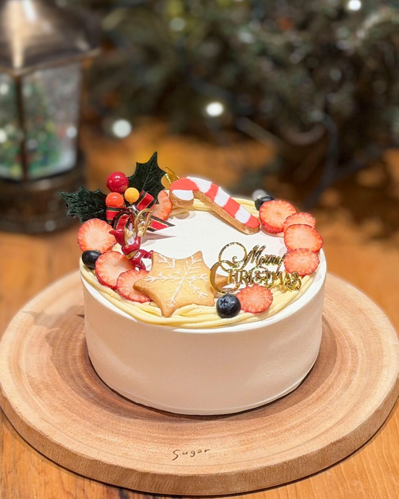
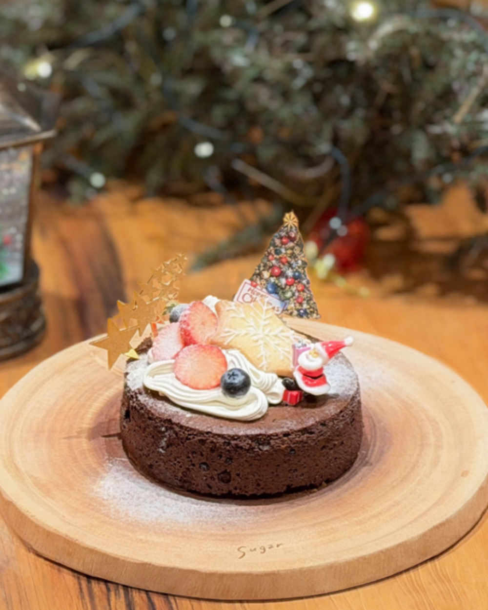
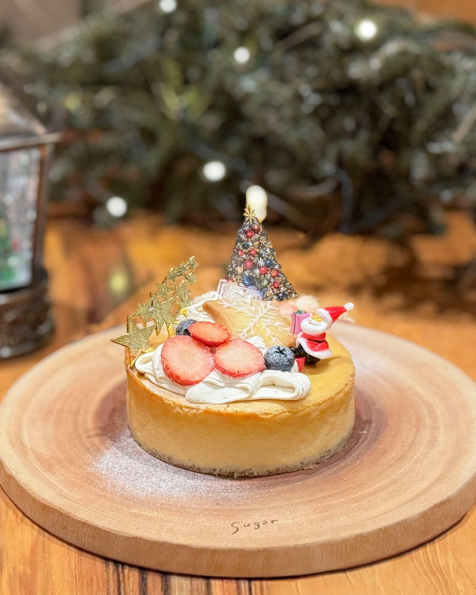

お受け取り 12/23-25 のみ
Bûche de Noëlブッシュドノエル
sugar風のブッシュドノエルです。ふわふわのチョコレートケーキで、切り株をイメージしました。
- 約14cm3-4名様
- ¥5,743
【アレルギー】乳・小麦・卵・大豆
sugar 2026

A baker’s quiet winter.
流行は移ろっても、
手でつくるお菓子の時間は変わらない。
焼きたての香りと、木のテーブルのぬくもりを、そのままご家庭へ。ひとつひとつ手で仕上げた、今年のクリスマスケーキです。
お受け取り期間Pick-up dates
12.19 Sat — 12.25 Fri
お受け取りは7日間。ケーキによってお受け取りできる日が異なります。
お受け取り時間Pick-up time
12:00 / 13:30 / 15:00 / 16:30
全日共通。ご予約時にお選びください。
ご予約期間Reservation
価格はすべて税込です

お受け取り 12/23-25 のみ
sugar風のブッシュドノエルです。ふわふわのチョコレートケーキで、切り株をイメージしました。
【アレルギー】乳・小麦・卵・大豆

お受け取り 12/23-25 のみ
今年のフレジエはリースの形に。ピスタチオとアーモンドの生地で、濃厚なピスタチオクリームと一緒にいちごをたっぷりサンドしています。
【アレルギー】乳・小麦・卵・大豆・ピスタチオ・アーモンド

お受け取り 12/19-25
中は生クリームとカスタードクリームがたっぷり。いちごを飾って、クリスマス仕様に仕上げました。
【アレルギー】乳・小麦・卵・大豆

お受け取り 12/23-25 のみ
[説明文]
【アレルギー】乳・小麦・卵・大豆・アーモンド・ヘーゼルナッツ

お受け取り 4号 12/19-25、5・6号 12/23-25 のみ
タルトの土台にもいちごをたっぷり焼き込み、最後までいちごを堪能していただけるタルトです。
※ 写真は4号サイズです
【アレルギー】乳・小麦・卵・大豆・アーモンド・ヘーゼルナッツ

お受け取り 12/19-25
中にも飾りにもいちごがたっぷりの、クリスマスの定番ケーキです。
※ 写真は4号サイズです
【アレルギー】乳・小麦・卵・大豆

お受け取り 12/19-25
隠れ人気のガトーショコラの、クリスマスver.です。とてもとても濃厚です。
【アレルギー】乳・小麦・卵・大豆・ヘーゼルナッツ・アーモンド

お受け取り 12/19-25
店頭に通年並ぶチーズケーキとはまた違う食感に仕上げた、濃厚チーズケーキです。
【アレルギー】乳・小麦・卵・大豆・アーモンド


お受け取り 12/19-25
デコレーションなしのシフォンに、アイシングクッキーなどの飾り付けオーナメントをセットに。ご自宅で自由に飾って楽しんでください。
【アレルギー】乳・小麦・卵
※ 写真はイメージです。入荷状況により、飾り付けが変更になる場合があります。
ケーキの種類とサイズによって、お受け取りできる日が異なります。12/19〜22は一部のケーキのみ、12/23〜25はすべてのケーキをご予約いただけます。
お受け取り時間はどの日も 12:00 / 13:30 / 15:00 / 16:30 からお選びいただけます。
| ケーキ | 12/19-22 | 12/23-25 |
|---|---|---|
| ブッシュドノエル | — | 予約可 |
| いちごとピスタチオのフレジエ 5号 | — | 予約可 |
| シューホール 5号 | 予約可 | 予約可 |
| 和栗とほうじ茶のタルト 4号 | — | 予約可 |
| いちごのタルト 4号 | 予約可 | 予約可 |
| いちごのタルト 5号・6号 | — | 予約可 |
| いちごの生クリーム 4号・5号・6号 | 予約可 | 予約可 |
| 濃厚ガトーショコラ 4号 | 予約可 | 予約可 |
| チーズケーキ 4号 | 予約可 | 予約可 |
| シフォンホール ミニ・大 | 予約可 | 予約可 |
— はその期間のご予約を承っていません。
この3日間は、ブッシュドノエルの形をした当日販売限定のホールケーキや、カットケーキも店頭に並びます。ご予約なしでお買い求めいただけます。
数に限りがあり、売り切れ次第販売終了となります。確実にお求めになりたい方は、ご予約ケーキをご利用ください。
ご予約方法
Online
受付開始 11/2(月)〜。ケーキ・お受け取り日・時間を選んでお申し込みください。ご予約確定メールに記載の「ご予約番号（ご予約ID）」をお受け取り時に確認します。
オンライン予約ページへIn store
受付開始 11/1(日)〜。sugar ebie 店でのみ承ります（sagisu 本店では受付しておりません）。ご予約ケーキはすべて事前決済です。受付の際、店頭でお並びいただく場合があります。
店舗情報を見るご予約前にお読みください